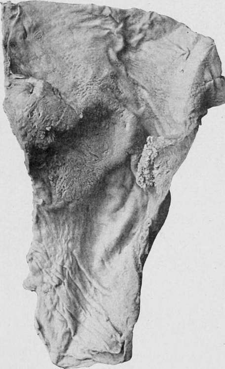

Chapter II. Carcinoma And Sarcoma Of The Duodenum
Description
This section is from the book "Cancer And Other Tumours Of The Stomach", by Samuel Fenwick. Also available from Amazon: Cancer and other tumours of the stomach.
Chapter II. Carcinoma And Sarcoma Of The Duodenum
Carcinoma affects the duodenum as a primary disease much less frequently than the stomach. In the course of 42,000 postmortem examinations made in Vienna, a primary malignant growth was found in the intestines in 443 cases, but in only seven, or 0.017 per cent., was the duodenum the seat of the disease (Schlesinger). According to Perry and Shaw, ten examples of the complaint occurred in 18,000 necropsies performed at Guy's Hospital (0.05 per cent.), but of these only four are stated to have been carcinomatous ; while among 19,518 post-mortems recorded at the London Hospital, we find that the duodenum was the seat of a cancerous growth in eighteen, or in about 0.09 per cent. If allowance be made for the occasional inclusion of sarcomata in the latter statistics, it would appear that primary carcinoma of the duodenum is met with once in about 1,500 to 2,000 necropsies in London, and thus presents a ratio to gastric cancer of 1 to 20. According to the statistics of Maydl and Schlesinger, the duodenum is affected in about 2 per cent, of the cases of primary malignant disease of the intestine.
The great majority of duodenal cancers belong to the cylinder-celled variety, but spheroidal-celled growths are not uncommon, and Atkinson states that colloid cancer is relatively frequent. Adeno-carcinoma usually encircles the gut, and gives rise to a contraction of its lumen which, viewed from the outside, looks as though a piece of string had been tied tightly round the bowel. Less commonly the growth infiltrates the walls for some distance above the stricture, and gives the diseased tissues a funnel-shaped appearance. The spheroidal carcinomata either take the form of soft flat excrescences, or of deep ulcers with elevated irregular edges and fungating bases.
The disease may occur at any part of the duodenum, but is most frequent in the second or vertical portion, where its seat of election is the mucous membrane covering the biliary papilla. Out of fifty-one cases which we have collected, the first part was affected in eleven, or 21.5 per cent., the second in twentynine, or 57 per cent., and the third in seven, or 13.5 per cent., while in the remaining 8 per cent, the disease involved the whole or greater portion of the duodenum.
Fig. 57.-Primary carcinoma of the first part of the duodenum, involving the pylorus. (London Hospital Museum.).
Secondary Carcinoma is usually the result of an extension of the disease from a neighbouring organ. In the majority of the cases the head of the pancreas is the seat of the primary mischief, but in not a few of these it probably commenced in the lining membrane of the ampulla of Vater. In others the duodenum is involved by a growth of the gall-bladder, of the bile-duct, of Wirsung's duct of the pancreas, of the omentum, of the retro-peritoneal glands, or of the right adrenal. The first part is also apt to be invaded by a growth of the pylorus (p. 58).
Multiple Carcinomata are occasionally encountered, but they almost always arise either by contact infection or by transplantation of particles detached from a growth higher up. In rare instances cancer of the duodenum is associated with cancer of the stomach or of the oesophagus (Lannois and Courmont).
Primary Sarcoma of the duodenum is very rare, and only about twenty-cases have been recorded. As a rule the disease is of the round-cell variety, and involves all three portions of the bowel, while not infrequently the jejunum and ileum are also affected. The wall of the gut is greatly thickened, but its lumen is more often increased than diminished (Libman). The growth may compress the biliary and pancreatic ducts (Lancereaux), or it may give rise to extensive ulceration and lead to fatal haemorrhage (Eolleston).
Secondary Sarcomata chiefly occur in cases of melanosis or of lympho-sarcoma of the retro-peritoneal glands.
Etiology
Like simple ulcer in the same situation, carcinoma is more frequent in men than in women, no fewer than thirty-seven out of our fifty-one cases having been of the male sex. The average age at the time of death was fifty-three years, the mean duration of life in the male cases being fifty-two years, and in the female fifty-four years. Nattan-Larrier, however, found that in rather more than one third of the cases he collected the patient was over seventy years of age. The disease is apt to follow a chronic ulcer, at least ten instances in which this sequence of events occurred having been placed on record (Perry and Shaw, Nattan-Larrier, Letulle). In other cases, and more especially in women, the carcinoma is associated with the presence of gall-stones.
Symptomatology. -The symptoms of duodenal cancer vary according to the situation of the growth. When the first or horizontal portion of the bowel is affected the patient presents all the indications of pyloric stenosis, and a differential diagnosis is extremely difficult. Disease of the second or vertical part is apt to involve the orifice of the common bile-duct, so that its location may often be determined during life by the coexistence of jaundice and enlargement of the liver; while a stricture of the duodenum below the biliary papilla is usually attended by bilious vomiting and the presence of pancreatic juice in the ejecta. It is therefore convenient to consider the clinical aspect of the disease, according as it is situated above, around, or below the biliary papilla.
Continue to:
- prev: Other Points Of Distinction From Carcinoma. Part 3
- Table of Contents
- next: Carcinoma Above The Biliary Papilla (Supra-Ampullary Or Parapyloric Cancer)